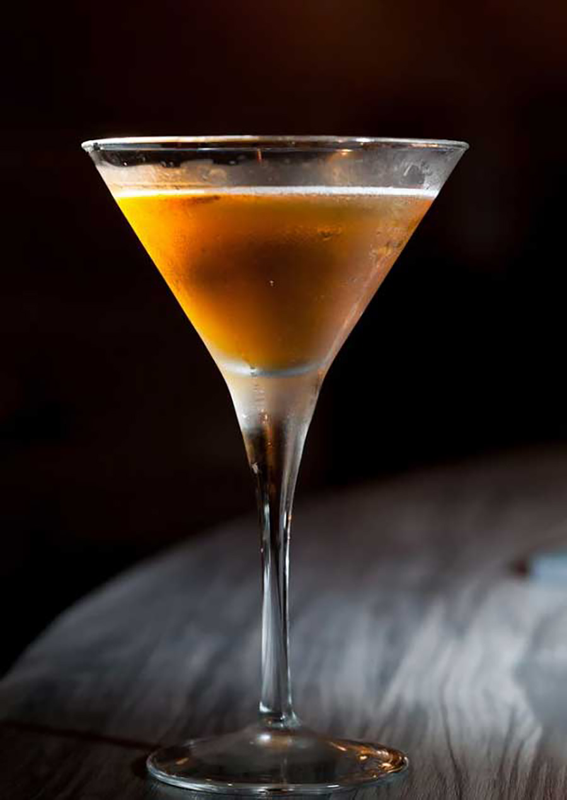

Angel Face

Description
The angel face is a cocktail with unknown origins but it's featured on the International Bartenders
Association's "unforgetables" cocktail list. Its components are all equal parts so it is quite
simple to make.
Ingredients
- Gin of choice
- Apricot brandy
- Calvados (apple and/or pear based brandy from Normandy in France)
Steps
- Chill a coupe, a Marie Antoinette or a Nick & Nora glass
- Add in 1 oz equal parts of each ingrediant to a shaker.
- Fill the shaker with ice and shake for about 8-10 seconds
- Double strain the cocktail onto the chilled glass